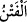
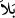
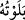

Âyetteki “şer” ve “hayır”dan maksad, fakirlik, elem ve şiddet gibi belâlar ile
zenginlik, lezzet ve sevinç gibi nimetlerdir. Siz bütün bunlara sabrediyor ve şükrediyor
musunuz; yoksa etmiyor musunuz?
Bazıları şöyle demişlerdir: “Sizi kahır ve lütuf ile, ayrılık ve vuslat ile, ikbâl ve idbâr
ile, mihnet ve âfiyet ile, cehâlet ve ilim ile, bilinmemek ve bilinmekle imtihan ederiz”
Sehl şöyle demiştir: “Sizi şerle” Hakk’ın hidâyeti olmaksızın nefse ve hevâya tâbi
olmakla “da hayırla” günahlardan koruyarak ve tâate muvaffak kılarak “da imtihan
ederiz.”
Âyette “fitne”, bir deneme ve sınama olarak demektir. “__WORD__ kelimesinin asıl mânâsı,
iyisini kötüsünden ayırmak için altını ateşe sokmaktır.
Ebû Ümâme (r.a.)’dan Nebî (a.s.)’ın şöyle dediği rivâyet edilmiştir: “Sizin altınınızı
ateşle denemeniz gibi, Allah da sizi belâlarla imtihan eder. Onlardan bâzısı saf altın
gibi çıkar. İşte o, Allâh’ın şüpheli şeylerden koruduğu kimsedir. Bâzısının ayarı
öncekinden daha düşük çıkar. İşte o, bâzı şüpheli işler yapan kimsedir. Bâzısı da
siyah altın gibi çıkar. İşte o da günahlara mübtelâ olan kimsedir.”[168]
Hâfız der ki:
Yalancı olanların yüzlerinin kara olmasını sağlayacak
Deneme âleti bulunsaydı ne güzel olurdu!
Hucendî de şöyle der:
Geçer akçe ile geçmez akçelerin, yâni niyet ve ihlâsın
Darphanesi aşktır, mihengi de muhabbettir
Râğıb Isfahânî, şöyle der: “__WORD__” elbisenin eskimesi anlamınadır. “__WORD__ çok sınamaktan
dolayı onu eskittim demektir. Cismi yıprattığı için gama “belâ” denilmiştir.”
Mükellef tutma da şu yönlerden “belâ” diye isimlendirilir:
1- Bütün mükellefiyetler, bedenler için meşakkat vericidir. Bu yönden bir
deneme/imtihan olmuştur.
2- Bütün mükellefiyetler, birer imtihandır.
3- Allâh’ın imtihanı, kulları şükretsinler diye bazen sevinilecek şeylerle, bazen de
sabretsinler diye zarar verici şeylerledir. Buna göre sıkıntı da lütuf da imtihandır.
Mihnet/sıkıntı sabrı, lütuf ise şükrü gerektirir. Sabrın haklarını yerine getirmek, şükrün
haklarını edâ etmekten daha kolaydır. Bu durumda lütuf bu iki imtihandan daha zoru
olmuştur. Bu bakımdan Hz. Ömer (r.a.) şöyle demiştir: “Sıkıntılarla imtihan olunduk,
sabrettik. Bollukla denendik de buna şükredemedik.” İşte bu yüzden mü’minlerin emiri
Hz. Ömer (r.a.) yine şöyle demiştir:
“Kime dünyalığı genişletilir de, bununla kendisine bir tuzak kurulduğunu bilmezse o,
aklını yitirmiştir.”